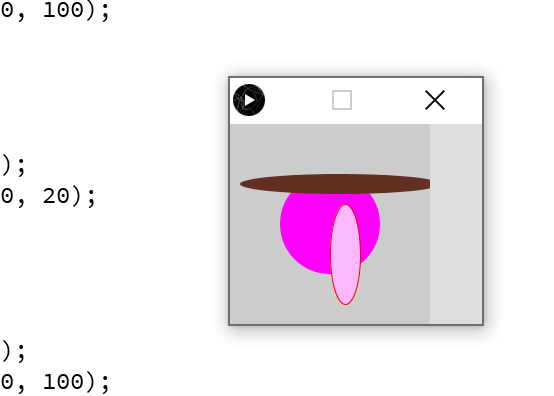
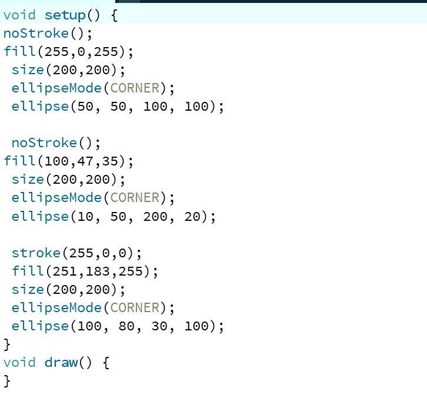

Computer Vision 2f
 Hier wat verschillende soorten cirkels en ovalen toegevoegd met kleuren.
Hier wat verschillende soorten cirkels en ovalen toegevoegd met kleuren.
Verschillende soorten vormen toegevoegd in verschillende kleuren. Ik heb rect, line, triangle, en quad gebruikt.
Hier wordt er wat getekent op het scherm als je met je cursor erover hovert.